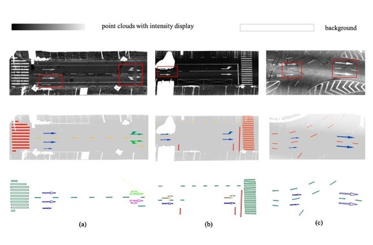

I am a Researcher and PostDoc in the School of Computer Science and Artificial Intelligence, Wuhan University of Technology.
Before joining Wuhan University of Technology, I received my doctor degree advised by Prof. Bisheng Yang in 2023
and worked with Prof. Jantien Stoter and Liangliang Nan for 1 year in the 3D GeoInfo Group
of Delft University of Technology.
My research interest lies at the cross of 3D Computer Vision and Urban Understanding particularly including scene understanding and modeling, point cloud processing
as well as their applications in intelligent transportation system (ITS).
I am open for academic coorperations and looking for self-motivated master students! Please drop me an email if you are interested in working with me!
Recent News
2023-12-30: I was awarded a Ph.D by Wuhan University!
2016-06-30: I got my bechlar degree from Wuhan University!
Selected Publications
* denotes equal contributions and † denotes the corresponding author.
Publications

A two-stage approach for road marking extraction and modeling using MLS point clouds
Xiaoxin Mi, Bisheng Yang†, Zhen Dong†, Chong Liu, Zeliang
Zong, Zhenchao Yuan
ISPRS J 2021 (IF: 11.774)
[Paper]
Automated 3D road boundary extraction and vectorization using MLS point clouds
Xiaoxin Mi, Bisheng Yang, Zhen Dong†, Chi Chen, Jianxiang Gu
IEEE T-ITS 2021 (IF: 9.551)
[Paper]